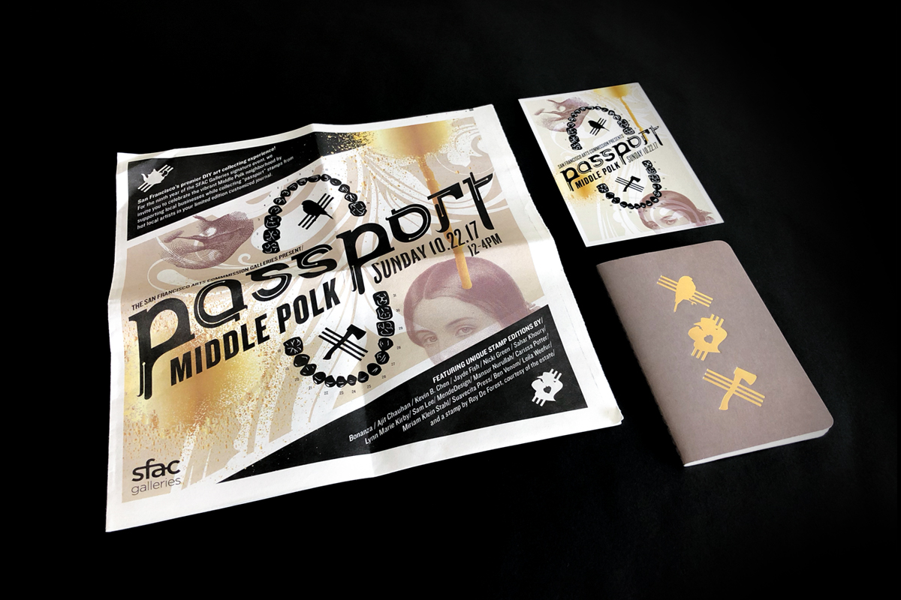
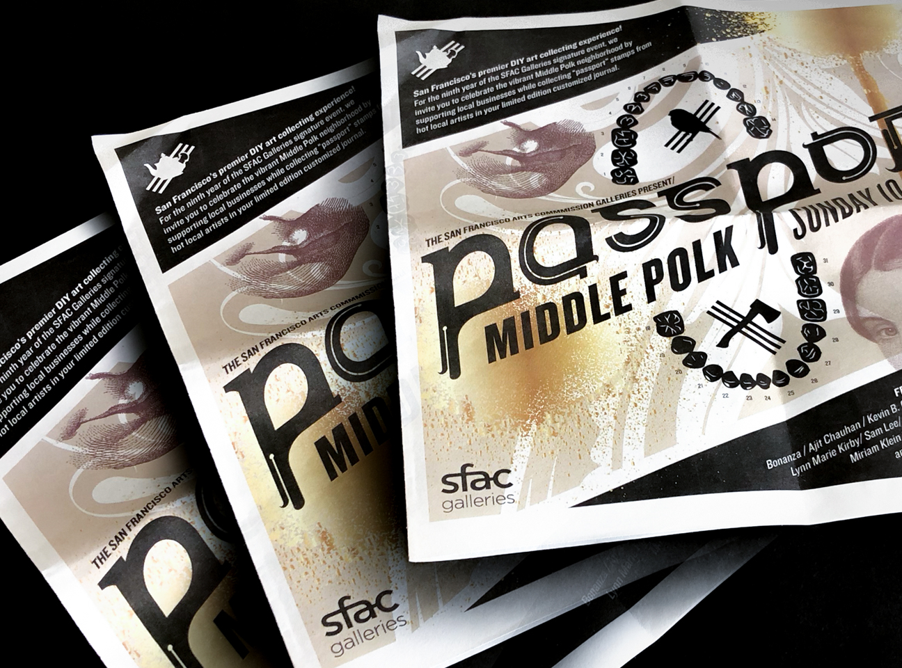

SFAC Passport Middle Polk
Branding for San Francisco Arts Commisions' Annual passport event. For 2018 the event celebrates the history and identity of the Middle Polk neighborhood.
As an intern at MendeDesign, I helped the team with the branding for this fun DIY event. In the introduction statement MendeDesign discusses the design language as conceptualized by...
That corridor of polk bounded by Geary and California. Home, alternately to immigrants of German stock, Victorian ladies, earthquake survivors, longshoremen, gay entreaupeneurs, and those that slipped through the cracks. Now, a thriving commercial strip reflecting the latest wave of prosperity that is San Francisco.


The passport book
We also found that Frank Norris' 1899 novel Mcteague: A Story of San Francisco was an interesting piece tied to Polk's inner history. A story of a dentist on Polk Street whose story is enwrapped with greed, futile love, boom, and bust which ties us full circle to the larger narrative of prosperity and displacement in San Francisco.

At Chronicle, everyone keeps such a fast pace while also working through publishing and design challenges very thoroughly and collobaratively. It was great to get an insight on the publishing industry, especially since Chronicle is one of the very few publishers that continue to push thoughtful and progressive content into the book industry.
Printed postcards I designed for titles in adult trade books.